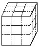

习题三解答
1.解：4×4＋（1×1＋2×2＋4×4）×4
=100（平方米）。
答：模型涂刷油漆的面积是100平方米。
2.解：π×1.52×2＋2π×（0.5+1+1.5）×1
＝32.97（平方米）。
答：这个物体的表面积为32.97平方米。
3.解：62×2＋（12＋22＋32＋42＋52+62）×4
=436（平方分米）。
答：涂上油漆部分的面积是436平方分米。
4.解：42×2＋（12＋1×2＋1×3＋1×4）×4
＝72（平方米）。
答：这个立体图形的表面积为72平方米。
5.解：上下方向：22×9×2=72（平方厘米），
前后方向：22×7×2＝56（平方厘米），
左右方向：22×9×2＝72（平方厘米），
（计算左右方向面积时，请注意底层前部凹进去的二个侧面）.
表面积为：72＋56＋72＝200（平方厘米）。
答：立体图形的表面积为200平方厘米。
6.解：由于本题所给出的正方体棱长为4厘米，从六个面的中心位置各挖去一个棱长为1厘米的正方体，这样得到的玩具中心部分是实体。
原正方体的表面积为：42×6=96（平方厘米）.在它的六个面各挖去一个棱长为1厘米的正方体后增加的面积为：12×4×6=24（平方厘米），
这个玩具的表面积为：96+24＝120（平方厘米）。
答：这个玩具的表面积为120平方厘米。
如果把本题的条件“4厘米”改换成“3厘米”，那么解法就要发生变化，因为挖去六个小正方体后，大正方体的中心部分即与其主体脱离，这时得到的新玩具是镂空的.把这个玩具分成20部分，8个“角”和12条“梁”，如右图。

每个“角”为棱长1厘米的小正方体，它外露部分的面积为：12×3=3（平方厘米），则8个“角”外露部分的面积为：3×8=24（平方厘米）。
每条“梁”为棱长1厘米的小正方体，它外露部分的面积为：12×4＝4（平方厘米），则12条“梁”外露部分的面积为：
4×12=48（平方厘米）。
这个玩具的表面积为：24＋48=72（平方厘米）。
答：这个玩具的表面积为72平方厘米。
7.解：102×（3×2）＝600（平方厘米）
答：这些小正方体中没有被涂上红色的所有表面的面积和为600平方厘米。
8.解：①先求切成棱长为1厘米的小正方体后，所有这些小正方体的表面积：
把这个几何体分成20部分，8个“角”和12条“梁”.每个“角”有8个小正方体，则8个“角”共有8×8＝64个小正方体.
每条“梁”有1个小正方体，则12条“梁”共有1×12＝12个小正方体。
所以共有小正方体：64＋12＝76个），这些小正方体的表面积和为：12×6×76＝456（平方厘米）。
②再求被染上黄漆的面积总和：
8个“角”被染上黄漆的面的个数：
（4×6-3）×8＝168（个）。
12条“梁”被染上黄漆的面的个数：4×12=48（个）.被染上黄漆的面积总和为：
12×（168＋48）=216（平方厘米）。
③最后求未被染上黄漆的面积总和：
456-216=240（平方厘米）。
答：这些小正方体未被染上黄漆的面积总和为240平方厘米.